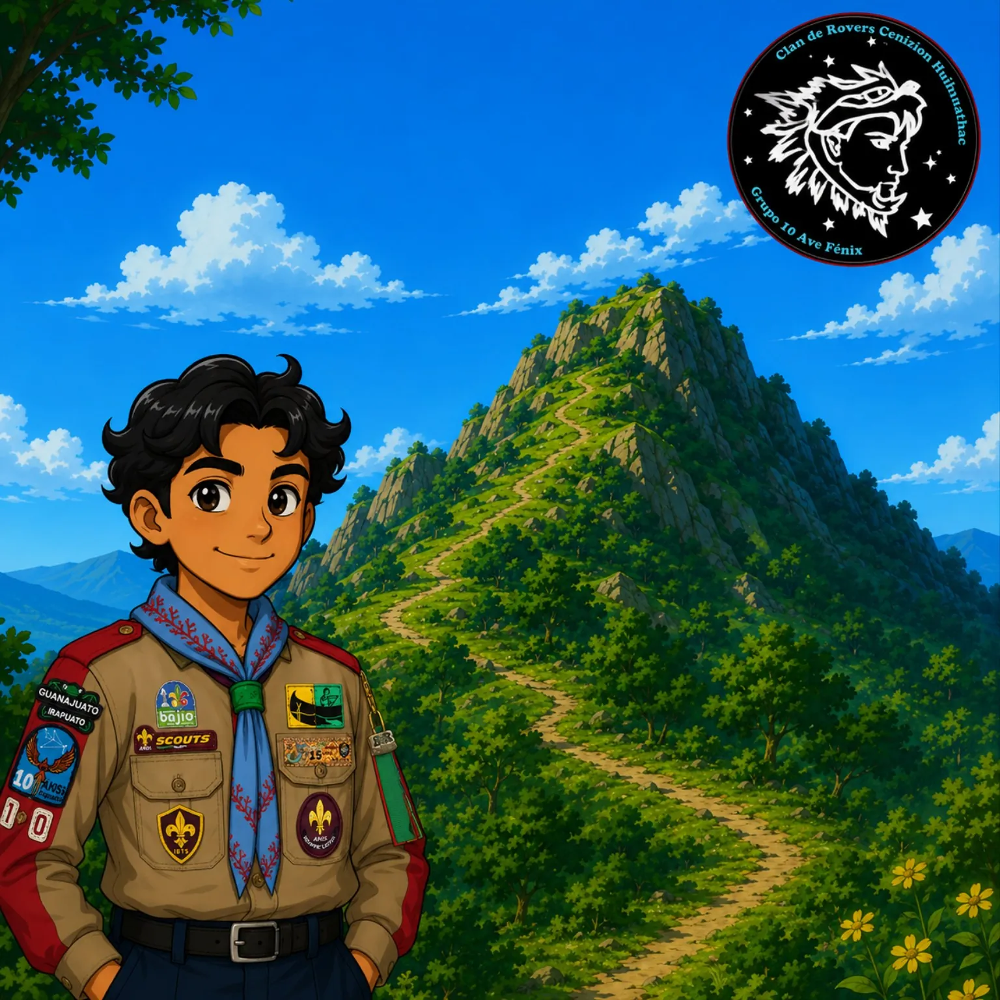

Zonas de Camping y Hiking
Explora los mejores lugares para camping, rutas de hiking y una biblioteca de recursos creada por y para la comunidad scout.
Cargando lugares…
Sin conexión: el mapa base necesita internet.
Biblioteca de Recursos
Manuales de NudosGuías descargables en PDF
Recetario de PatrullaCocina sin utensilios
Seguridad ScoutProtocolos de emergencia
Manuales de Técnica ScoutOrientación, pionerismo y más
Actividades ScoutDinámicas, grandes juegos y rallys
Ceremonias y MísticaTradiciones y espiritualidad
¿Conoces un lugar increíble?
Ayúdanos a crecer nuestra base de datos. Mándanos la ubicación y detalles para agregarlos a la red.
Mandar nuevo lugarClan Centzon Huitznahuac | Jonathan Alexander